Free
computer Tutorials
|
Free
computer Tutorials
|
|
 home home |
|
|||||
Microsoft Word 2007 to 2010Section Ten: 1 2
Word Table StylesWe'll use Table Styles to format the second table. Along the way, you'll
learn how to delete rows and columns, how to change the height and width,
and how to create a table using the table dialogue box. The table you'll
design will look like something like this: 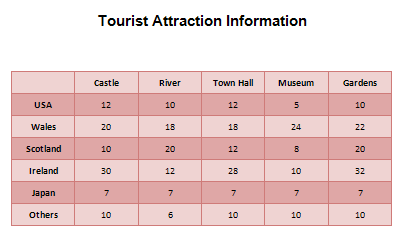 First, we'll create the blank table itself. So give yourself some space on your page by hitting the Enter key on your keyboard a few times. Type the heading for the table. Now click on the Insert tab at the top of Microsoft Word. Click the Table item again. This time, select Insert Table
from the menu: 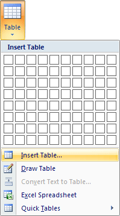 When you click on Insert Table you'll see the following dialogue box appear: 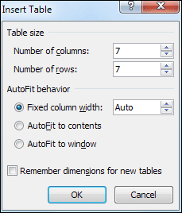 Enter 7 for the number of columns and 7 for the number of rows. Then click OK. You'll see your 7 by 7 table appear on your page. However, we've made a mistake because we only need 6 columns. To delete
one of them, click in any cell of the final column. Click on the Layout
tab at the top, then click the Select item. From the Select menu,
choose Select Column: 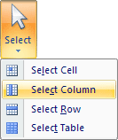 Your table will then look like this: 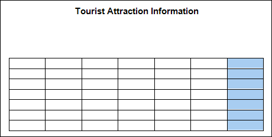 To delete the column, make sure the Layout tab is selected at the top of Word. Locate the Rows & Columns panel and the Delete item: 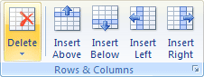 Click on Delete to reveal the following menu: 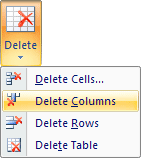 Select Delete Columns from the menu. The column or columns you have selected will then be deleted. (Note that from the Rows & Columns panel you can also add a new column to the left or right of the one you have selected. You can add a new row in the same way.) Now that we have a bare table of 6 columns and 7 rows, we can add the data. For the top row, type the following, one item to each cell (without the commas). Leave the first cell blank, though: Castle, River, Town Hall, Museum, Gardens For the first column, type the countries: USA, Wales, Scotland, Ireland, Japan, Others For the data, type the following into the cells: 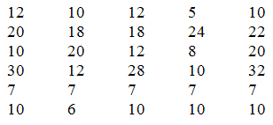 When you're done, your table should look like this: 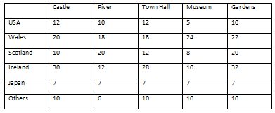 Now align the text and the numbers so that they are centre aligned. You did this for the previous table. (Select the whole table using the Layout panel, then use the Alignment panel to centre everything.) Now that everything is nicely centred, we can increase the height and width of the cells. To do that, select your entire table again. Still on the Layout panel, locate the Cell Size panel: 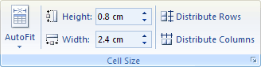 Change the Height to 1 cm and Width to 2.5 cm (in inches 0.4 and 1). Your table should now look like this: 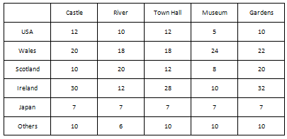 Now that we have all the text and numbers finished, we can apply a style. This is quite easy. Click anywhere inside of your table. Now click on the Design tab at the top of Word. Locate the Table Styles panel: 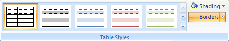 You can click on any of the styles and your table will update itself. To get back to no style at all, select the first item, the one highlighted in the image above. But click the bottom arrow on the styles area to see more appear: 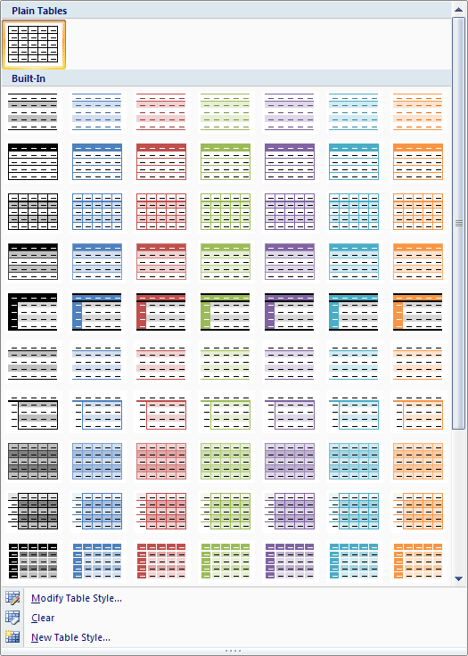 The one we chose at the top of this lesson was "Medium grid 1 accent 2". Feel free to select one that catches your eye, though. You don't have to go with ours. Try them all out to see what they look like. Note the menu items at the bottom. If you designed your own table style, like we did for the first one, you can click New Table Style. You can then add that style to the list above. Here's our finished table, with a different style chosen: 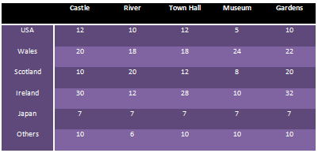
And that's it for tables. There's a lot more you can do with them, so have a play around with the various options and see how you get on. You should have enough information to create something very impressive! In the next section, you'll learn about document collaboration. Document Collaboration in Word 2007/2010--> <--Back to the Word Contents Page View all our Home Study Computer Courses
|
||||||
|